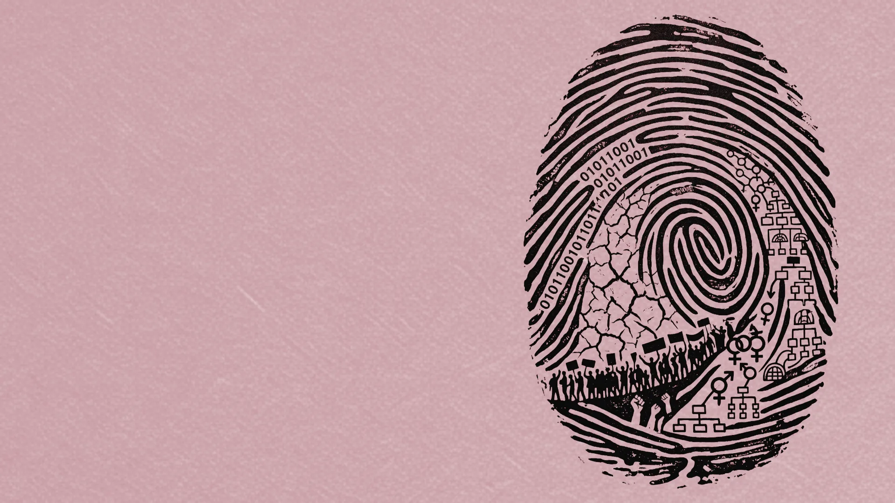
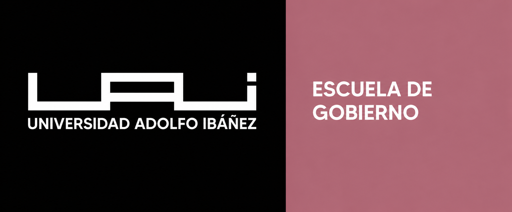

Reflexionar
Interrogar los supuestos que cada investigador da por sentados después de años de inmersión en su objeto.

Ciencias sociales · conversación académica
Tensiones sociales globales
Una jornada para examinar las tensiones que configuran la sociedad contemporánea: desigualdad, poder, conflicto e inteligencia artificial.
Sala Valparaíso · Sede Errázuriz UAI · Las Condes
Universidad Adolfo Ibáñez · Escuela de Gobierno

Marco temático de la convocatoria
Los ejes oficiales conectan problemas, escalas y enfoques distintos. Sus cruces organizan las dieciséis ponencias seleccionadas para esta novena edición.
01—04 · Sistema visual del simposio
EJE TEMÁTICO
EJE TEMÁTICO
EJE TEMÁTICO
EJE TEMÁTICO
El IX Simposio propone descomponer el presente para observar las estructuras, relaciones y tensiones que suelen permanecer bajo su superficie. No se trata de ofrecer una explicación única, sino de poner en conversación investigaciones capaces de iluminar dimensiones distintas de una misma realidad.
Sus cuatro ejes conectan desigualdades y derechos; instituciones, poder y (des)orden político; conflicto social y crisis; e inteligencia artificial, ética y transformación social. El encuentro vincula evidencia, interpretación y debate para comprender procesos todavía abiertos.
Un recorrido, tres puertas de entrada
Tres recorridos ordenan la experiencia: comprender el origen del encuentro, planificar la jornada y acceder a cada mesa, ponencia y recurso.
ORIGEN Y SENTIDO
AGENDA ACADÉMICA
MESAS Y RECURSOS
01 · Historia
¿Por qué este simposio?El Simposio surge para poner en contacto investigaciones en curso que trabajan objetos distintos y rara vez encuentran una instancia común. Nueve ediciones han convertido ese ejercicio de reflexión, análisis y comunicación en un encuentro con memoria propia.
Interrogar los supuestos que cada investigador da por sentados después de años de inmersión en su objeto.
Someter esos supuestos a método, evidencia y contraste, combinando registros empíricos e interpretativos.
Traducir los hallazgos a un lenguaje inteligible para pares que no comparten el mismo objeto ni la misma técnica.
La diversidad temática no es un obstáculo que el programa deba disimular, sino la condición que le da sentido.
02 · Programa confirmado
Daniel Chernilo —PhD en Sociología por Warwick y profesor titular del Departamento de Sociología de la Universidad de Chile— abre la jornada preguntando qué porvenir tiene un horizonte cosmopolita y cómo puede la teoría social hablar de las tensiones del presente.
Cristóbal Rovira Kaltwasser —profesor titular del Instituto de Ciencia Política UC— y Cristóbal Bellolio —profesor asociado de la Escuela de Gobierno UAI— contrastan el populismo como fenómeno político y la teoría política liberal.
Formato de las mesas: 3 minutos de apertura del moderador, 12 minutos por ponencia y 19–22 minutos de debate conjunto.
03 · Personas y conversación
La programación reúne una conferencia inaugural, un panel de expertos de cierre y cuatro moderaciones de mesa. Las fotografías y los enlaces académicos se incorporarán únicamente cuando estén autorizados.
PhD en Sociología por la Universidad de Warwick y profesor titular del Departamento de Sociología de la Universidad de Chile.
Profesor titular del Instituto de Ciencia Política de la Pontificia Universidad Católica de Chile.
Profesor asociado de la Escuela de Gobierno de la Universidad Adolfo Ibáñez.
Magíster en Ciencia Política, candidata a doctora del DPIP, Escuela de Gobierno UAI.
Magíster en Análisis Sistémico Aplicado a la Sociedad, doctorando, Escuela de Gobierno UAI.
Doctora en Economía, profesora asistente, Escuela de Negocios UAI.
Doctor en Ciencia Política, profesor asociado, Facultad de Artes Liberales UAI.
04 · Paneles interactivos
¿Qué nos dicen los datos sobre cómo se distribuyen hoy el malestar, la desigualdad y el voto?
Abre en el registro más empírico y deductivo. Las ponencias examinan cómo la inseguridad económica, el trabajo, la legitimidad institucional y la educación estructuran el bienestar y la conducta política.
Los títulos, autores y afiliaciones están confirmados. Cada ficha incorporará su abstract, palabras clave y archivo descargable cuando el material sea autorizado.
05 · Ubicación y acceso
Universidad Adolfo Ibáñez
Av. Presidente Errázuriz 3485, Las Condes, Región Metropolitana.
Ruta recomendada · menor variación
Desde la estación, continúa a pie por San Gabriel o Baztán hacia Av. Tobalaba. Es la alternativa más corta, predecible y menos expuesta a la congestión superficial.
Abrir ruta en el mapaEl estacionamiento interno registrado con acceso por Galicia 610 requiere confirmación directa con la sede. En horario escolar, la disponibilidad de estacionamiento gratuito en la vía pública puede ser limitada.
06 · Participación
Votación en vivoCada mesa tiene su propio código QR. Escanéalo desde tu teléfono al término de las presentaciones o toca la tarjeta de la mesa para votar. Se admite un voto por mesa; la votación es anónima y considera la claridad expositiva, la solidez argumentativa y la contribución de la ponencia al debate.
Los resultados se actualizan en tiempo real y se darán a conocer en la conversación de cierre de la jornada.
07 · Archivo posterior
Este espacio reunirá la memoria académica del IX Simposio para facilitar la consulta, circulación y continuidad de sus principales contribuciones.
Diapositivas, abstracts autorizados y materiales complementarios de las ponencias.
PRÓXIMAMENTEFotografías de la jornada, registro de las mesas y contenidos audiovisuales disponibles.
PRÓXIMAMENTESíntesis de las conversaciones, resultados de participación y memoria final del encuentro.
PRÓXIMAMENTEEstado editorial
La identidad, la sede, el programa, las mesas, las ponencias y los contactos ya están disponibles. Los materiales complementarios se incorporarán de forma progresiva.